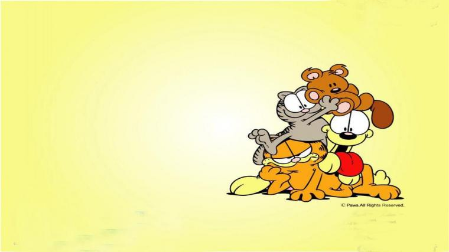

About PookyBear
PookyBear is Garfield's sidekick and his bosom buddy for life. He goes where Garfield goes. They go adventures together, keeping company through thick and thin. There will be times that PookyBear disappears, but it's for good reason: to be cleaned and go on another adventure! Otherwise, there is no day or night that PookyBear is away from Garfield. They like to end their days looking at the stars and just gaze at the stars as though they are mapping out their next destination....in secret.
PookyBear and his friends
PookyBear Characteristics
- Cuddly and soft as tissue!
- Does not complain.
- Secretly speaks to you.
PookyBear's Friends
PookyBear has awesome friends, especially Garfiled. Sometimes he escapes to be with Odie for a break from Garfield, but that is his secret. Find more about his other friends below.